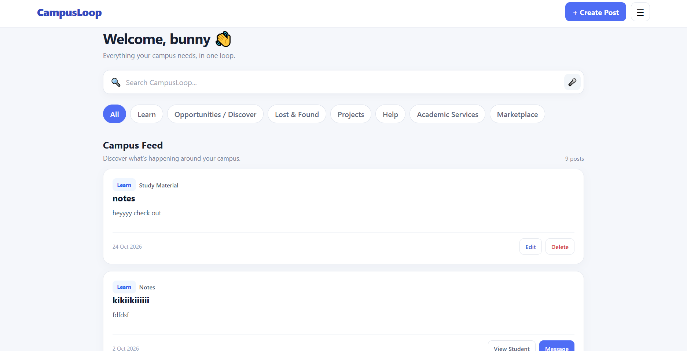
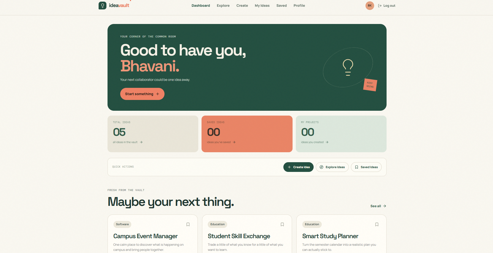
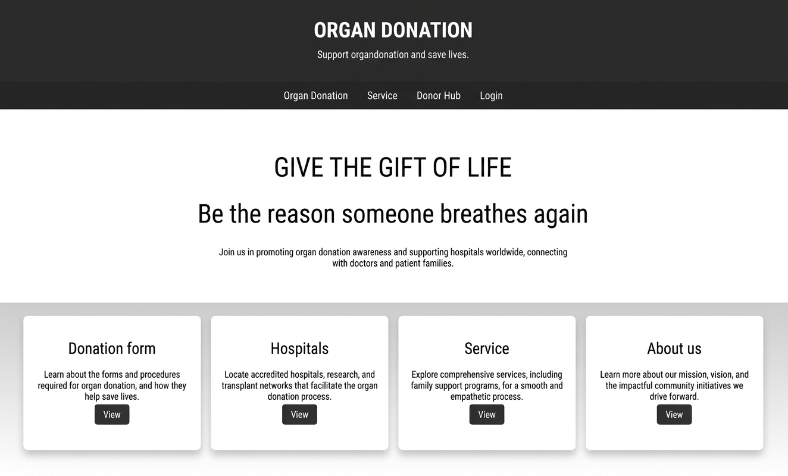
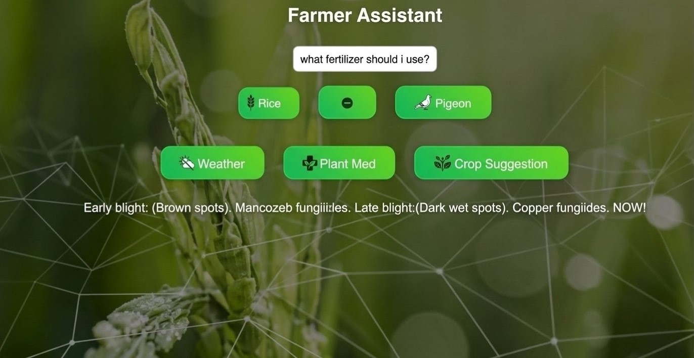
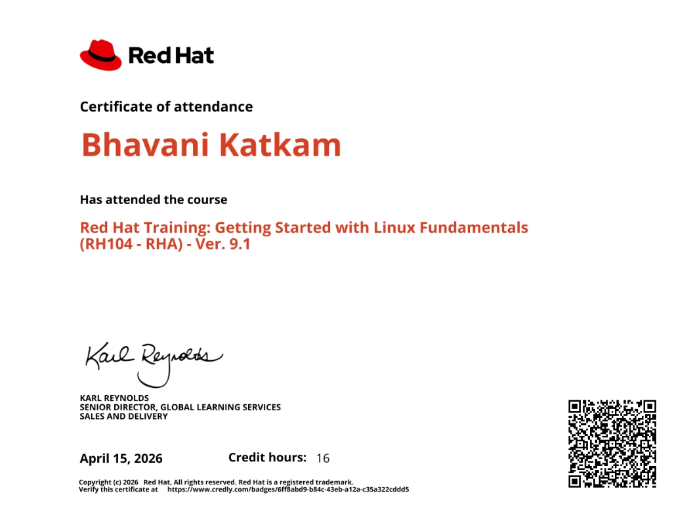
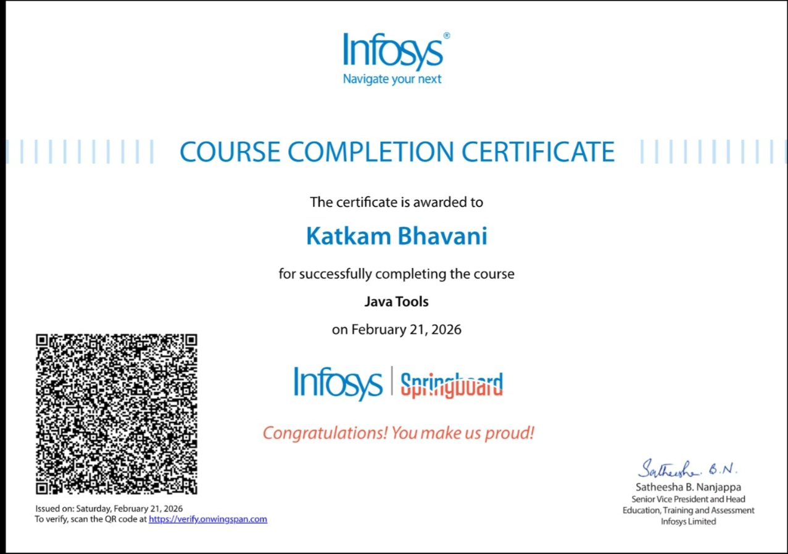
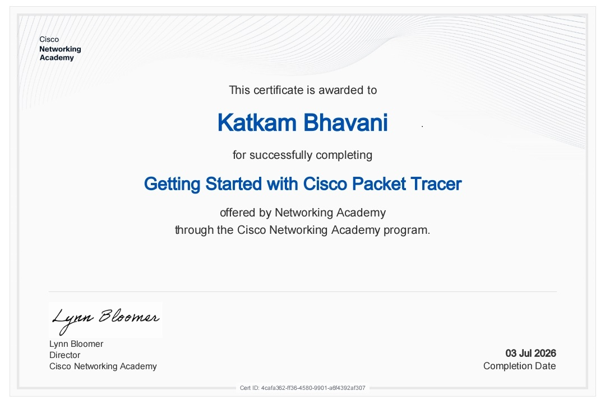
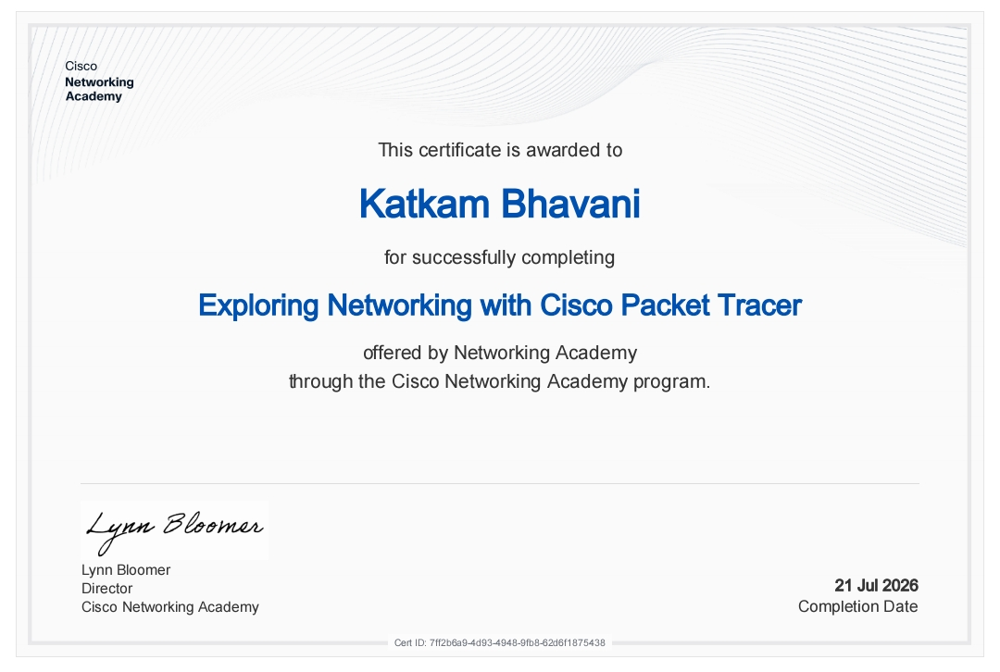
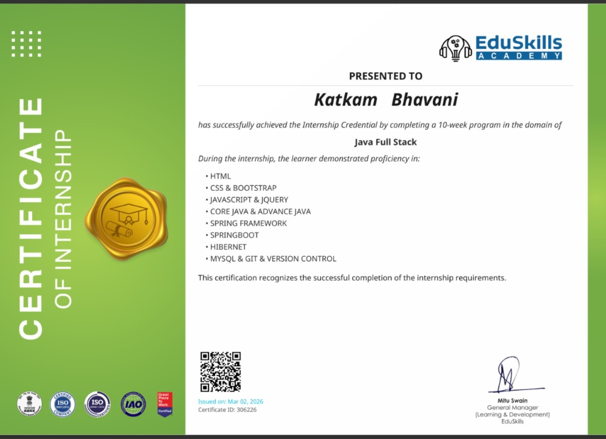

HTML5
Semantic page structure, content, and forms
PractisingWELCOME
I'm a Computer Science and Engineering student developing my skills in web development and software development through hands-on projects, practical learning, and problem-solving.
Curiosity · Practice · Continuous growth
ABOUT ME
I'm Katkam Bhavani, currently pursuing a B.Tech in Computer Science and Engineering at Vidya Jyothi Institute of Technology. I completed my diploma in the same field and am continuing to strengthen my technical knowledge.
I'm developing my skills in web development and software development through projects, exploring new technologies, and learning through practical experience.
I value curiosity, consistency, and continuous improvement. My goal is to grow into a skilled software professional by applying my knowledge to real-world challenges, learning from practical experience, and contributing to meaningful projects .
TECHNICAL TOOLKIT
Technologies and tools I'm learning and practising through coursework and hands-on projects.
Semantic page structure, content, and forms
PractisingResponsive layouts, Flexbox, Grid, and styling
PractisingDOM manipulation, events, and form validation
Building fundamentalsProgramming fundamentals and problem-solving
Building fundamentalsCore syntax and programming concepts
LearningQuerying fundamentals and database concepts
LearningRepositories, version control, and commits
PractisingThese descriptions reflect my current learning areas. I continue to strengthen them through practice and project work.
SELECTED WORK
Projects and learning experiences from my academic and personal development journey.

A campus community platform developed a campus community web application that brings student posts, project collaboration, opportunities, lost-and-found updates, and help requests together on one platform. Worked on building the user interface, integrating application features, testing functionality, and troubleshooting issues.

Conceptualized IdeaVault from my own idea and developed it using an AI-assisted development platform. Created and refined prompts to translate my requirements into application features, then tested the dashboard, navigation, interactive buttons, and page refresh behavior. This project helped me gain practical experience in prompt writing, AI-assisted development, application testing, and troubleshooting.

Collaborated on a diploma team project focused on promoting organ donation awareness and providing a platform for collecting donor information through an online form. The project helped develop my understanding of website development, form design, and teamwork.

Collaborating on a team project focused on crop recommendation, exploring how technology can help identify suitable crops based on relevant agricultural conditions. The project is part of my B.Tech learning journey.
ACADEMIC BACKGROUND
My academic journey from secondary education to computer science engineering.
| Qualification | Institution | Specialisation | Duration | Status |
|---|---|---|---|---|
| SSC | MJPTBCWREIS | Secondary School Education | 2021–2022 | Completed |
| Diploma | Jyothishmathi Institute of Technology and Science | Computer Science and Engineering | 2022–2025 | Completed |
| B.Tech | Vidya Jyothi Institute of Technology | Computer Science and Engineering | 2025–2028 | In progress |
My education has helped me build a foundation in Computer Science and Engineering, which I continue to strengthen through learning and hands-on practice.
LEARNING & DEVELOPMENT
Courses and training experiences that support my ongoing learning in software development, Linux, and computer networking.

Red Hat

Infosys

Cisco Networking Academy

Cisco Networking Academy

EduSkills
LET'S CONNECT
I'm happy to connect about projects, learning opportunities, internships, and collaboration.
Email katkambhavani78@gmail.com
GitHub https://github.com/katkambhavani
LinkedInhttps://www.linkedin.com/in/katkam-bhavani-39b0563b6